Yakitori Chicken
Ingredients
- 450g (1 lb) chicken breasts, thighs, or combination
- 5–6 scallions
- 120 mL (1/2 cup) soy sauce
- 120 mL (1/2 cup) mirin (sweet rice wine) see instructions for substitutes
- 60 mL (1/4 cup) sake (rice wine)
- 60 mL (1/4 cup) water
- 30 mL (2 tsp) packed brown sugar
- 15 mL (1 tbsp) grated ginger (optional)
- 1 scallion (optional)
Instructions
For Sauce
PATR 1
Making Yakitori Sauce
- Locate or substitute the ingredients.
Look for ingredients such
as sake and mirin at Asian grocery stores, especially Japanese ones. If you cannot find mirin,
use additional sake in its place, along with 30 mL (2 tbsp) additional sugar. If you cannot find sake, use sweet sherry, shaoxing wine, or white wine instead. If you cannot find mirin,
use any of these ingredients or additional sake, along with 30 mL (2 tbsp) sugar to mimic mirin's sweet flavors
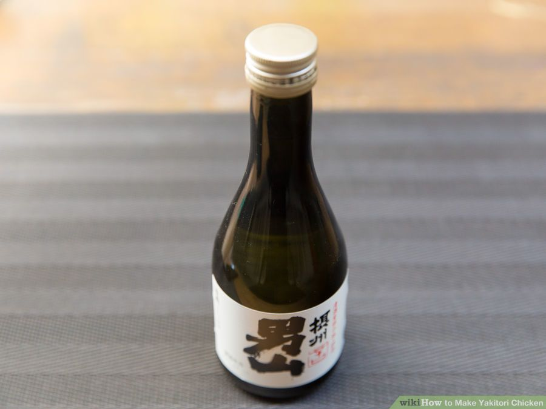
- Mix most of the yakitori ingredients in a small saucepan.
Mix together all of the soy sauce, mirin, sake,
water, and brown sugar from the yakitori sauce section in the ingredients list.
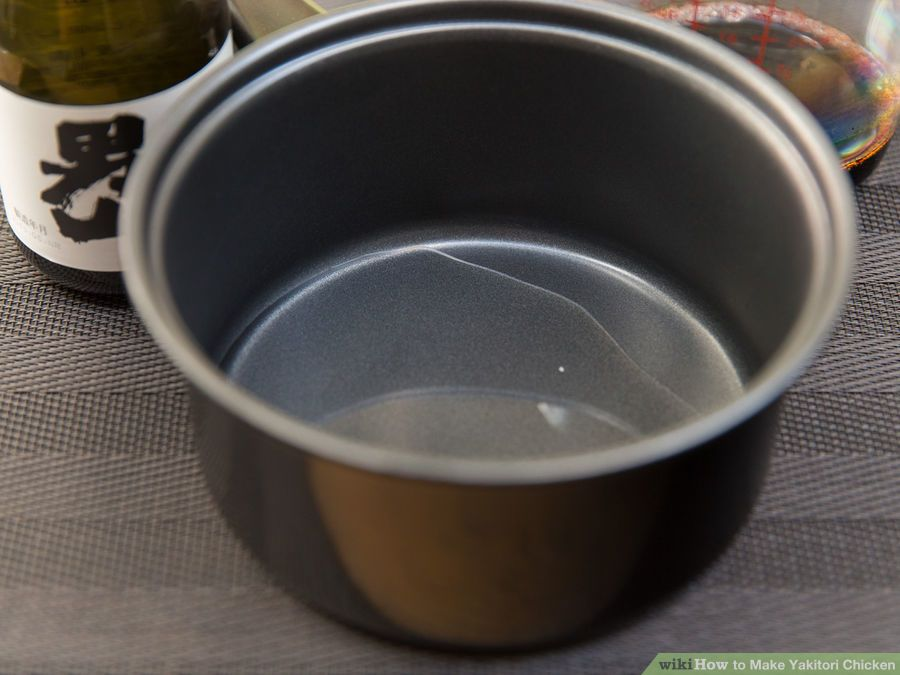
-
Prepare and add optional ingredients.
If you enjoy the flavor of ginger, peel a 2.5 cm (1 inch) section of ginger, discard the peel, and grate the rest, resulting in approximately 15 mL (1 tbsp) grated ginger. For an additional flavor that will match the yakitori skewers, cut off the dark green leaves of one scallion,
leaving them whole. Add one or both of these ingredients directly to the yakitori sauce mixture.
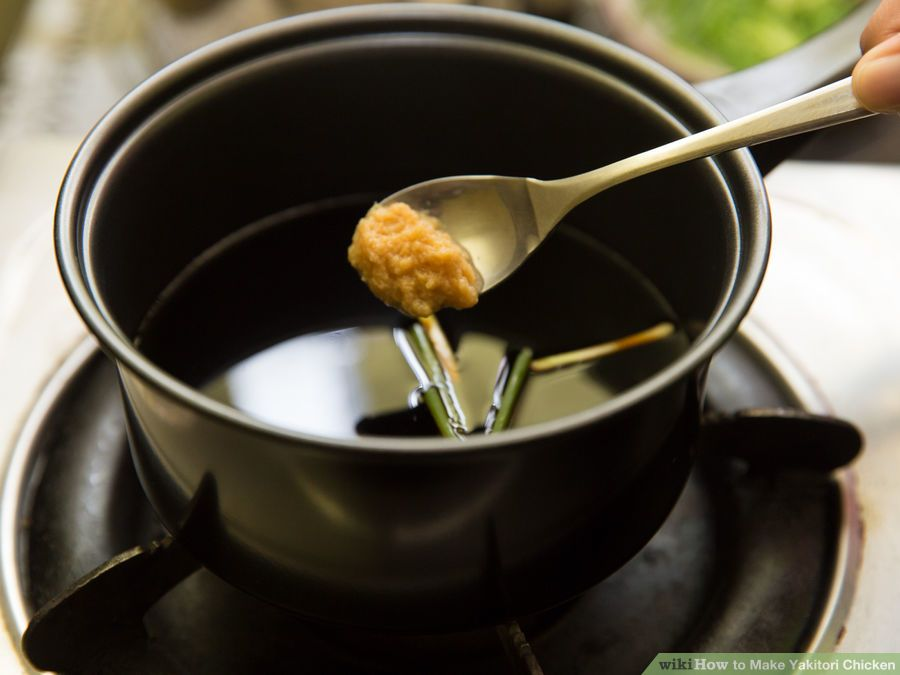
-
Simmer for about 30 minutes.
Bring the sauce to a boil over high heat, then immediately reduce to a simmer. Simmer uncovered until the liquid reaches about half its original volume,
becoming thick and glossy. This typically takes about 30 minutes
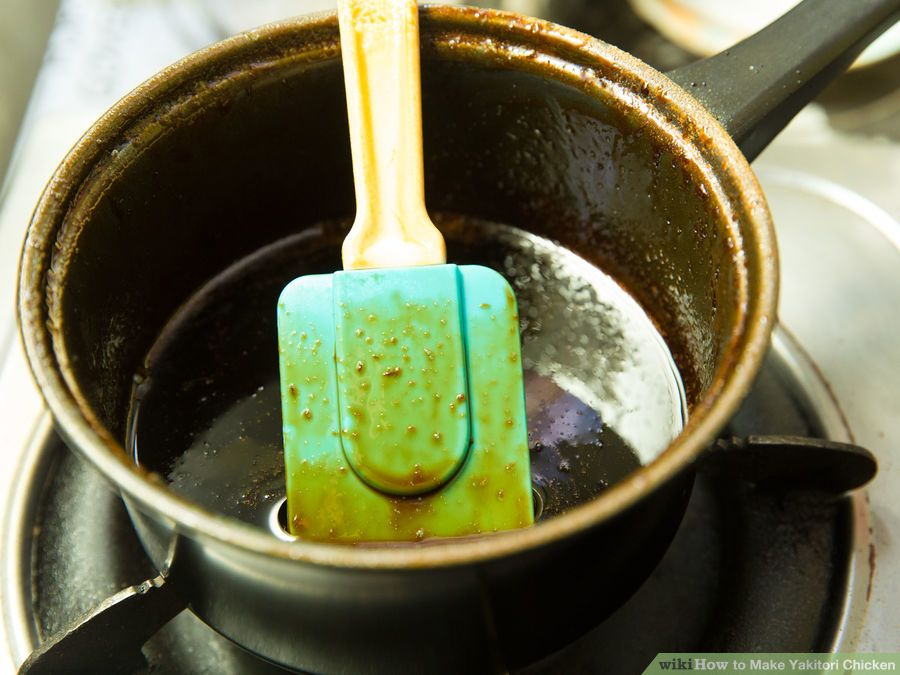
-
Remove from heat and set aside.
Turn off the heat and allow the yakitori to cool to room temperature before using.
Use a slotted spoon or other utensil to remove and discard the scallion leaves.
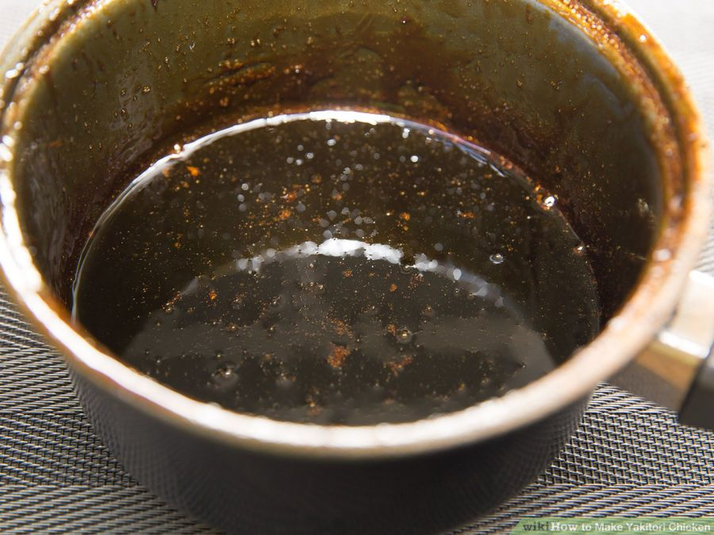
PART 2
Preparing the Skewers
- If using a barbecue, light it in advance.
Chicken yakitori is traditionally cooked on a charcoal grill.
Light these grills 30–45 minutes before you cook the chicken, waiting until the charcoal turns white and the flames die down. You may use a gas barbecue instead, which could only require 15–20 minutes of heating before use.[4] If you plan to marinade the ingredients,
which is optional, you may wish to wait until that step before you light the barbecue.
-
Soak the wooden skewers for 30 minutes.
Submerge about ten 15 cm (6 inch) skewers in cold water before you start food preparation, so they won't catch fire on the grill. Bamboo skewers called teppo gushi are usually used to make yakitori, since they have flattened sides that prevent the skewers from rolling on the grill.
However, you can use any design of bamboo or wooden skewers.
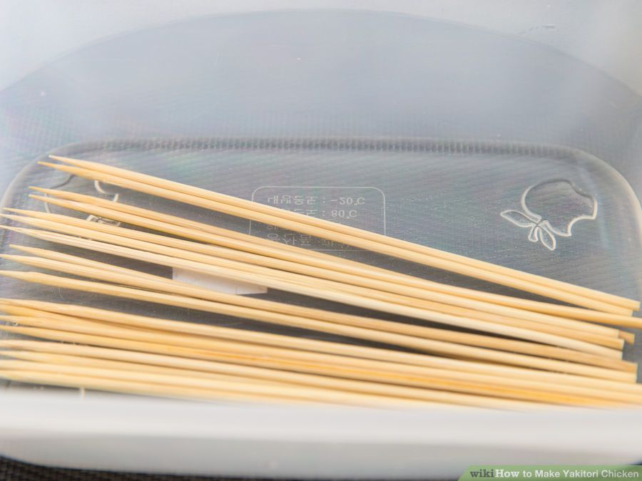
- Cut the scallions.
Cut off the brown ends of the scallions and throw them away.
Chop the remaining white and light green sections into chunks about 2 cm (3/4 inch) wide. Chop larger pieces in half lengthwise if necessary to keep pieces roughly the same size.
Optionally, the thinner, dark green pieces can be chopped finely and used as garnish on the final dish.
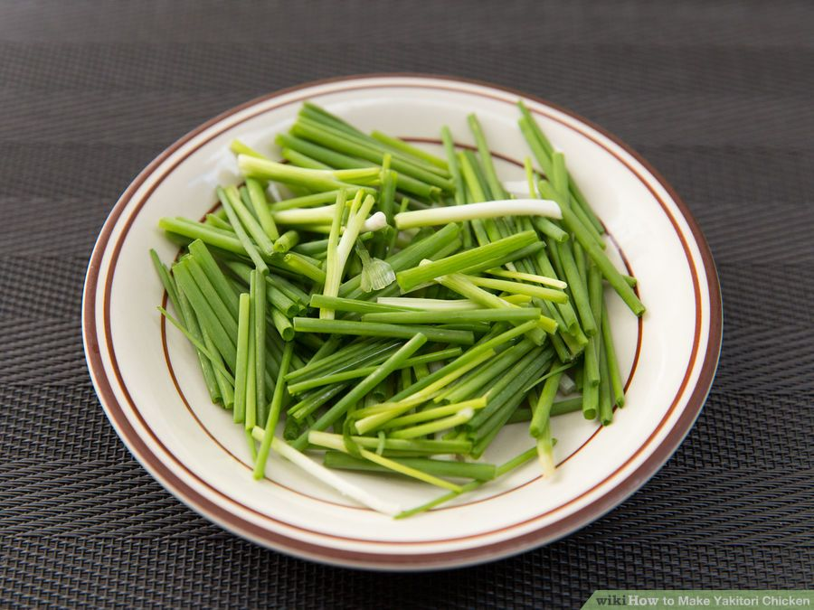
- Cut the chicken into bite sized pieces.
Chop 450g (1 lb) chicken breast or chicken thighs into bite size,
easily skewered pieces, about 2.5–3cm (1 inch) on each side.
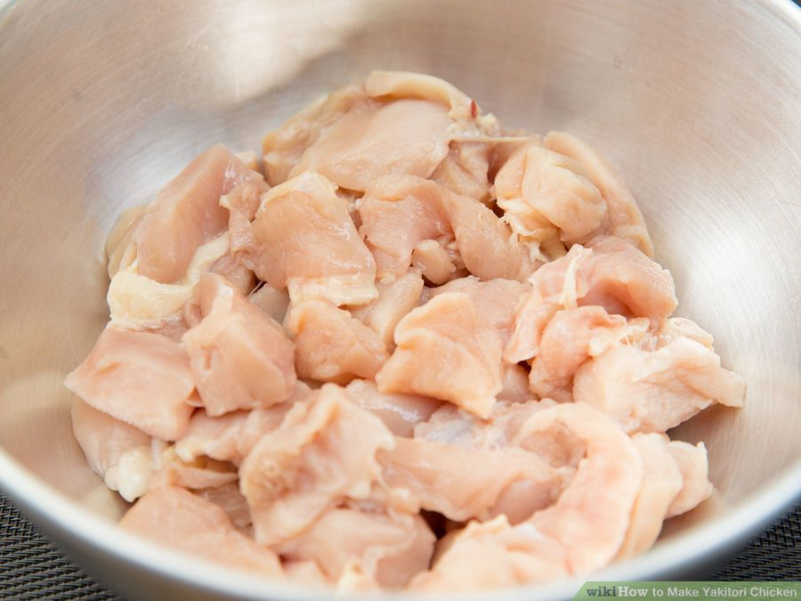
- Skewer the chicken and scallions.
To skewer a chicken piece, fold it in half, hold against a cutting board, and pierce it at a 45º angle with the skewer.[9] Alternate between skewering chicken and scallion pieces for each skewer.
Leave a little space at the ends of the skewers, to prevent pieces from falling off and so people can hold them.
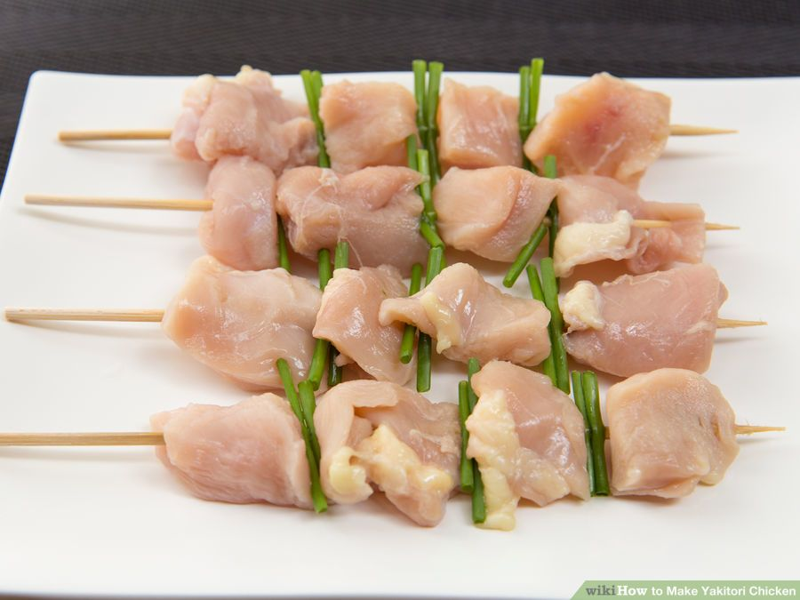
- Marinate the skewered ingredients (optional).
If you have the time, and prefer a stronger taste of yakitori sauce, you may set aside some sauce in a shallow
container and marinade the skewers in it for 15–30 minutes.[10] Throw away the marinade afterward,
as it is likely contaminated with bacteria from the raw meat.
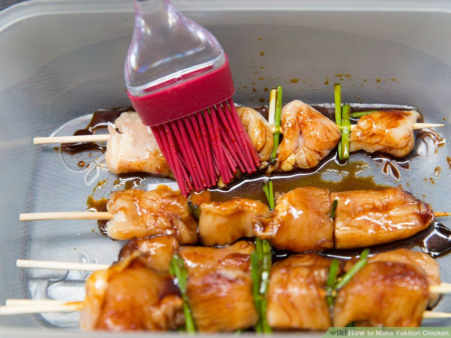
PART 3
Cooking the Yakitori
- Grill on a barbecue for the traditional method.
Yakitori is most commonly cooked on a grill, especially a charcoal one.
While waiting for your grill to heat up, as described in the section on preparing the skewers, brush each chunk of food with yakitori sauce. Place them on the hot grill in an area with strong, even heat.[12] Turn every two to three minutes, brushing more sauce onto the chicken and scallions each time.
They are ready to eat once golden brown on all sides, usually within several minutes
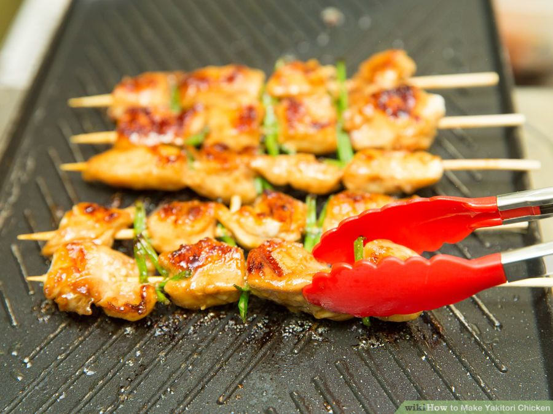
- Broil in the oven instead for similar results.
While you won't arrive at the same flavor as charcoal-grilled yakitori,
an oven broiler cooks meat much like a grill does. Grease the grate of a broiler tray with oil to prevent sticking,
and line the bottom of the pan with aluminum foil to catch spills and reflect heat. Lay the skewers on top of the grate, place the tray at the highest level of the oven, and broil for six minutes on a high broiler setting. Brush the sauce on both sides after this point,
then continue to cook for 3–4 minutes or until the sauce is dark and caramelized.
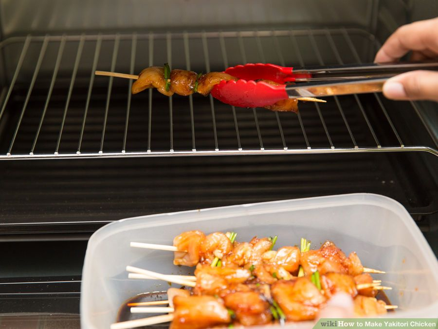
-
Use a frying pan as a convenient alternative.
Oily, fried flavors are not common in yakitori, so add only a very thin layer to your frying pan. Once a drop of water spatters when it hits the oil, add the skewered meat and cook at medium heat for about five minutes on each side,
or until it is brown and cooked through.
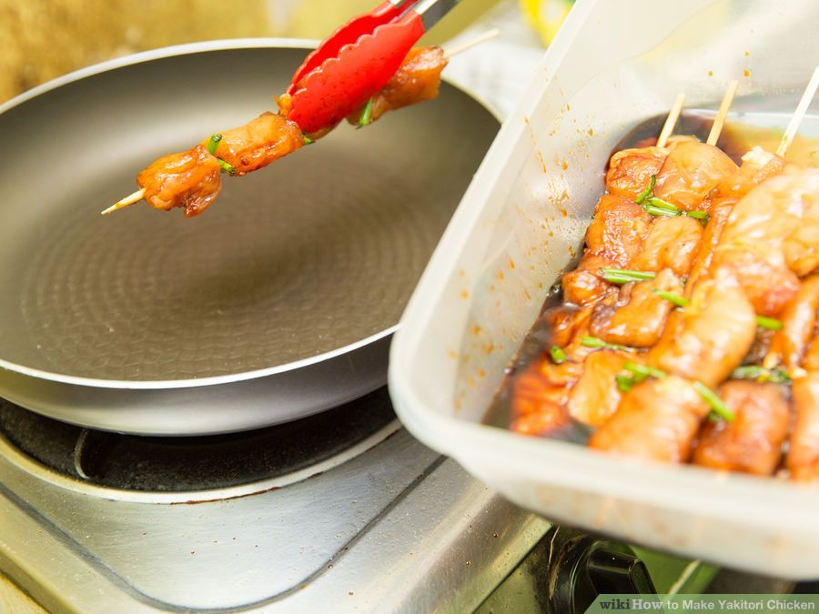
- Serve the yakitori.
Whichever cooking method you chose, yakitori pairs well with a sprinkle of toasted sesame,
and a garnish of the finely chopped dark green scallion leaves left over from earlier.
Provide additional yakitori sauce for pouring or dipping, from a container that did not come into contact with raw meat
(or with a brush that contacted raw meat.)
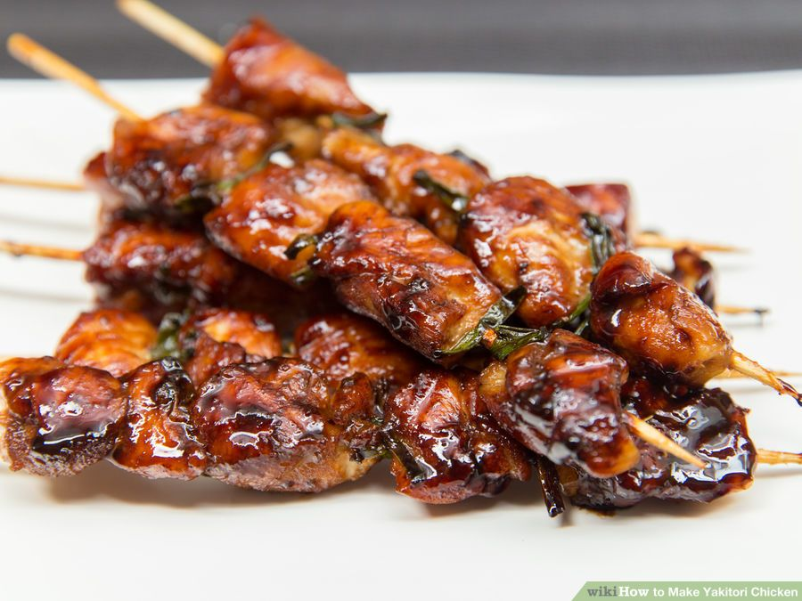
PART 4
Variations on the Recipe
-
Try sea salt and lemon instead of sauce.
This is a common and simple method of serving yakitori, which may allow you to focus on the flavor of the skewered ingredients instead of the sauce. Sprinkle sea salt over the skewers before cooking.
Squeeze lemon juice over them as well, or serve a lemon wedge at the
end of each skewer for the diners to squeeze themselves.
- Use organ meat from the chicken.
In Japan, many kinds of chicken meat are commonly cooked and served as yakitori, including organs such as hearts, livers, and gizzards. Elsewhere, you may need to ask a local butcher whether these parts are available.
These organs can be skewered as normal, but may require shorter grilling times
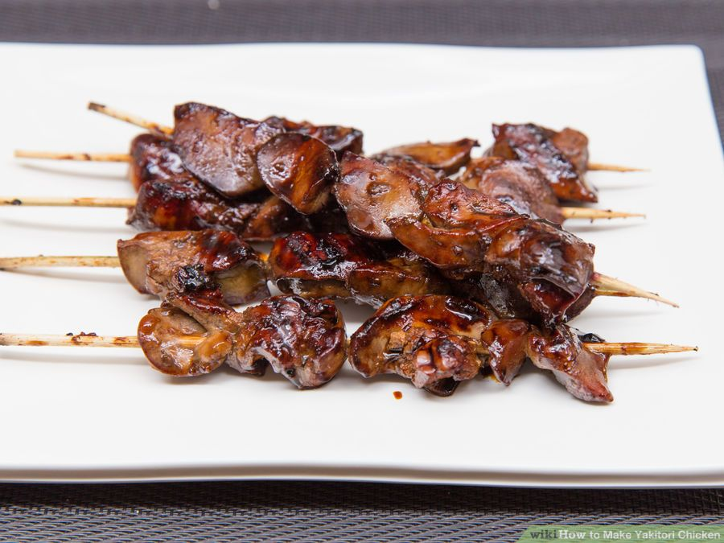
-
Try cooking any other meat.
Almost any meat can be chopped into bite sized pieces and skewered for yakitori. From a chicken alone, Japanese restaurants may serve the tail, skin, and cartilage from multiple places,
among other yakitori dishes.[19] Try making meatballs or pieces of beef or pork yakitori-style.
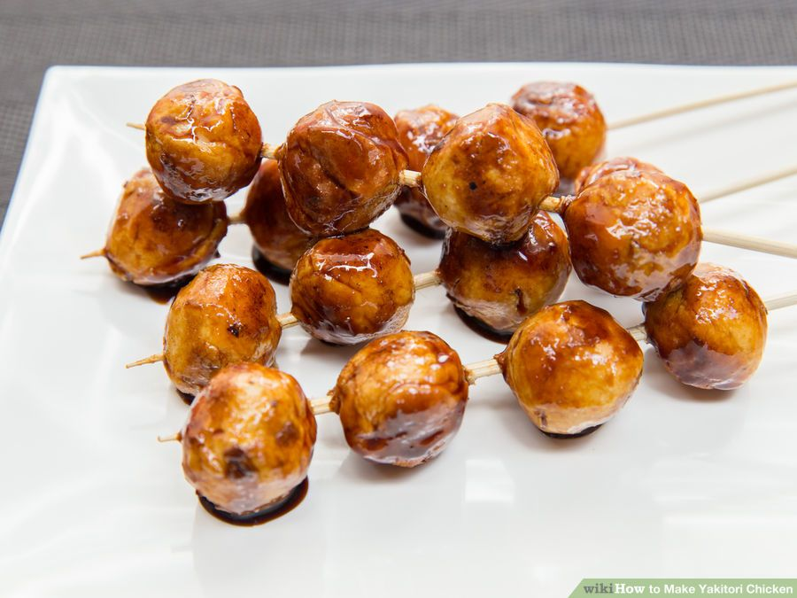
- Branch out to other ingredients.
While "yakitori" literally means "grilled chicken" and usually focuses on the meat and sauce, almost any firm, bite-sized cut of an ingredient can be skewered and grilled. Asparagus wrapped in bacon, extra-firm or deep-fried tofu,
and bell peppers are all commonly cooked this way in Japan, and are sometimes referred to as yakitori.
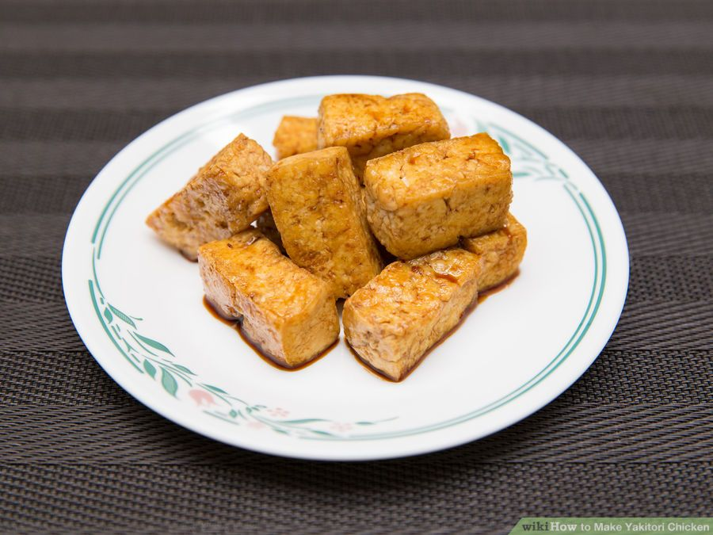